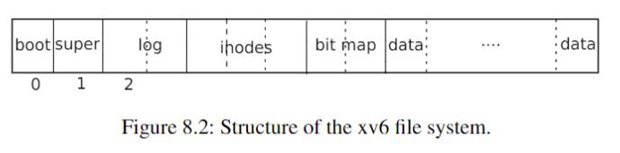

Lec13 File System
1 课前准备
Read
kernel/bio.c,kernel/fs.c,kernel/sysfile.c,kernel/file.cand “File system” (except for the logging sections).
文件系统的挑战：
文件系统需要磁盘数据结构来表示命名目录和文件的树，记录保存每个文件内容的块的标识，并记录磁盘的哪些区域是空闲的。
文件系统必须支持崩溃恢复。也就是说，如果发生崩溃（例如电源故障），文件系统在重新启动后仍必须正常工作。风险在于崩溃可能会中断一系列更新并留下不持久的磁盘数据结构（例如，既在文件中使用又标记为空闲的块）。
不同的进程可能同时对文件系统进行操作，因此文件系统代码必须协调以保持不变量。
访问磁盘比访问内存慢几个数量级，因此文件系统必须维护最常使用的块的内存缓存。
1.1 总览
xv6 的文件系统总共有七层。
| File descriptor |
| Pathname |
| Directory |
| Inode |
| Logging |
| Buffer cache |
| Disk |
disk 层从 virtio 硬件驱动读写块。buffer cache 层将 disk block 缓存并且同步对它们的访问，保证对于任何特定的 block 一次只有一个内核进程能修改它。logging 层允许更高的层包装对若干块的更新为一个 transaction，确保在崩溃时原子地更新块（即全部更新或不更新）。inode 层提供单独的文件，每一个表示为一个 inode——一个唯一的 i-number 和一些持有文件数据的块。directory 层将每个目录实现为一种特殊的 inode，其内容是一系列条目，每个目录条目包含一个文件名和 i-number。pathname 层提供层级路径名，并通过递归查找解析它们。file descriptor 层使用文件系统接口抽象了许多 UNIX 资源（比如管道、设备、文件等）。
磁盘硬件传统上将磁盘上的数据表示为 512 字节块（也称为扇区）的编号序列：扇区 0 是前 512 字节，扇区 1 是下一个，依此类推。操作系统用于其文件系统的块大小可能与磁盘使用的扇区大小不同，但通常块大小是扇区大小的倍数。xv6 在 struct buf 类型的对象中保存已读入内存的块的副本。此结构中存储的数据有时与磁盘不同步：它可能尚未从磁盘读取（磁盘正在处理它，但尚未返回扇区的内容），或者它可能已被软件更新但尚未写入磁盘。
文件系统必须计划在磁盘上存储 inode 和内容块的位置。为此，xv6 将磁盘分为几个部分，如图 8.2 所示。文件系统不使用块 0（它保存引导扇区）。块 1 称为 superblock；它包含有关文件系统的元数据（以块为单位的文件系统大小、数据块的数量、inode 的数量以及日志中的块的数量）。从 2 开始的块保存 log。log 之后是 inode，每个块有多个 inode。之后是 bitmap 块，跟踪哪些数据块正在使用。其余块为数据块；每个都在 bitmap 块中标记为空闲，或者保存文件或目录的内容。superblock 由一个名为 mkfs 的单独程序填充，该程序构建初始文件系统。

1.2 buffer cache 层
俩职责：(1) 同步访问以确保同一时间只有一个块的拷贝在内存里并且只有一个内核线程可以访问；(2) 将经常访问的块缓存起来。
主要接口：bread 和 bwrite。前者获得一个包含可以在内存中读取或修改的块副本的 buf，后者将修改后的缓冲区写入磁盘上的相应块。内核线程在使用完缓冲区后必须通过调用 brelse 来释放该缓冲区。buffer cache 使用睡眠锁来确保一次只有一个线程使用每个缓冲区（以及每个磁盘块）； bread 返回一个锁定的缓冲区，brelse 释放该锁。
buffer cache 具有固定数量的 buffer 来保存磁盘块。如果文件系统请求 cache 里不存在的块，buffer cache 回收 LRU (least recently used) 的 buffer 来保存新的块。
1.3 Code：Buffer Cache
（以下条目通过 ChatGPT 生成）
- 缓存管理的基本结构：
- 缓存管理中使用了一个双向链表来表示缓存中的缓冲区（buffer）。
- 在系统启动时，通过调用
binit函数（在kernel/main.c的第 27 行调用），使用buf数组中的NBUF个缓冲区来初始化这个链表。
- 缓冲区的状态：
- 每个缓冲区有两个状态字段：
valid表示缓冲区中是否包含块的副本，disk表示缓冲区的内容是否已经传递给磁盘，这可能会改变缓冲区的内容。
- 每个缓冲区有两个状态字段：
- 缓冲区的获取：
bread函数（在kernel/bio.c的第 93 行）调用bget函数来获取给定扇区的缓冲区。bget函数扫描缓冲区链表，以获取指定设备和扇区号的缓冲区。如果找到了相应的缓冲区，则获取该缓冲区的睡眠锁，并返回该缓冲区。- 如果没有缓存的缓冲区用于给定的扇区，则
bget必须创建一个。它再次扫描缓冲区链表，以查找未使用的缓冲区。任何未使用的缓冲区都可以使用。bget编辑缓冲区的元数据，记录新的设备和扇区号，并获取其睡眠锁。
- 缓冲区的并发控制：
- 重要的是每个磁盘扇区最多只能有一个缓存的缓冲区，以确保读者可以看到写入，并且文件系统使用缓冲区上的锁进行同步。
bget通过持续保持bcache.lock来确保这个不变式。这导致了对块是否存在的检查以及（如果不存在）指定一个缓冲区来保存块的操作是原子的。
- 缓冲区的使用：
- 当
bread函数从磁盘读取数据（如果需要）并将缓冲区返回给其调用者后，调用者对缓冲区具有排他性使用权，可以读取或写入数据字节。 - 如果调用者修改了缓冲区，它必须调用
bwrite将更改的数据写入磁盘，然后释放缓冲区。
- 当
- 缓冲区的释放：
- 当调用者使用完缓冲区后，必须调用
brelse来释放它。brelse函数释放睡眠锁，并将缓冲区移到链表的前面。 - 将缓冲区移到链表的前面使得链表按最近使用的顺序排列，即最先的缓冲区是最近被使用的，最后的是最不常用的。
bget中的两个循环利用了这一点：查找现有缓冲区的扫描在最坏的情况下必须处理整个链表，但从最近使用的缓冲区开始检查（从bcache.head开始并按照next指针遍历）将减少扫描时间，当引用的局部性好时。选择要重用的缓冲区的扫描通过向后扫描（跟随prev指针）选择最近最少使用的缓冲区。
- 当调用者使用完缓冲区后，必须调用
这里提到了两个锁，bcache.lock 用于保护缓冲区链表的访问和修改，保证其原子性。b->lock 用于保护对缓冲区内容的读写操作，以确保在一个时刻只有一个线程可以修改缓冲区的内容。
1.4 Code：Block Allocator
（跳过了 logging 的部分）
文件和目录内容存储在磁盘块中，这些磁盘块必须从一个空闲池中分配出来。xv6 的块分配器维护一个 bitmap，每一位上对应一个磁盘块，0 表示空闲，1 表示被使用。mkfs 会设置 bitmap 对应于引导扇区、superblock、日志块、inode 块和 bitmap 块。
balloc 函数的实现通过循环来考虑每个块，从块 0 开始到文件系统中的总块数（sb.size）为止。它寻找位图中值为零的位，表示该块是空闲的。如果找到了空闲块，就更新 bitmap 并返回该块。为了提高效率，balloc 函数的循环分成两部分。外部循环读取 bitmap 位的每个块，内部循环检查单个 bitmap 块中的所有位。由于 buffer cache 一次只允许一个进程使用任何一个 bitmap 块，所以可以防止两个进程同时分配块时可能出现的竞争条件。
1.5 inode 层
inode 有两个含义，第一个是在磁盘上的数据结构，由一个文件大小和一列 data block numbers 组成。第二个是在内存上的 inode，它是磁盘上 inode 的拷贝，同时含有内核需要的其他信息。
磁盘上的 inode 被包在一系列连续磁盘区域中，称为 inode block。每个都是相同大小，因此给定一个下标 \(n\)，索引它是很轻松的。实际上这个索引就称为 i-number。
磁盘上的 inode 被定义为 struct dinode，type 字段区分文件、目录、特殊文件（设备）。如果为 0 表示空闲。nlink 统计指向这个 inode 的条目数量。size 记录文件中内容的字节数。addrs 记录持有文件内容的 disk block number。
内核将内存中活跃的 inode 集合维护在一个表 itable 中；struct inode 是在内存中的 struct dnode 的拷贝。内核只有在 C 指针指向 inode 时才将那个 inode 拷贝到内存中。并对其维护一个共享指针1。iget 和 iput 分别获取和释放指向 inode 的指针，并修改它的引用计数。
1 和 C++ 中的 shared_ptr 一致。
iget 返回的 struct inode 可能没有任何有用的内容。为了确保它保存磁盘上 inode 的副本，代码必须调用 ilock。这会锁定 inode（以便其他进程无法锁定它）并从磁盘读取（如果尚未读取）。 iunlock 释放 inode 上的锁。将 inode 指针的获取与锁定分开有助于避免某些情况下的死锁，例如在目录查找期间。多个进程可以持有指向 iget 返回的 inode 的 C 指针，但同时只有一个进程可以锁定该 inode。
iput 这里，书上说会写入磁盘，但我并没有在源码中看到相关内容。
文件系统中的每个文件都有一个链接计数，表示有多少个目录项指向该文件。当链接计数降至零时，表示没有任何目录项指向该文件，即文件不再可见。但是，即使链接计数为零，文件仍然可能在内存中被进程引用，例如某个进程仍然打开着该文件。这意味着如果在最后一个进程关闭文件描述符之前发生了崩溃，文件将会被标记为在磁盘上分配但没有任何目录项指向它。
针对这个问题，两种解决方案：
系统重启后会扫描整个文件系统，查找已标记为分配但没有目录项指向的文件。一旦找到这样的文件，文件系统就可以释放它们。
文件系统会在磁盘上记录一个列表，其中包含链接计数降至零但引用计数不为零的文件的 inode 编号。当文件系统删除文件时，如果文件的引用计数达到了零，它会更新该列表，将对应的 inode 从列表中删除。在恢复时，文件系统只需释放列表中的文件。
xv6 以上两种方法都没有实现。这意味着 xv6 有可能会把磁盘空间耗尽。
1.6 Code：Inode Content
主要是代码的实现细节，略过。
1.7 Code：Directory Layer
(以下内容由 ChatGPT 生成）
这段文本描述了文件系统中目录（directory）的内部实现以及两个与目录操作相关的函数：dirlookup 和 dirlink。
目录结构： 目录在内部实现上类似于一个文件，其 inode 的类型为
T_DIR，而数据则是一个目录项（directory entries）的序列。每个目录项都是一个结构体struct dirent，包含一个名称和一个 inode 编号。目录项中的名称最长为DIRSIZ（14）个字符，如果名称长度小于DIRSIZ，则以NULL（0）字节终止。inode 编号为零的目录项表示空闲。dirlookup函数：dirlookup函数用于在目录中搜索具有给定名称的目录项。如果找到匹配项，则返回对应的 inode 指针（未加锁），并将poff设置为目录中该条目的字节偏移量，以便调用者可以编辑它。如果dirlookup找到正确的名称，它会更新poff并返回一个通过iget获取的未加锁的 inode。dirlookup返回未锁定的 inode 是因为调用者已经锁定了目录dp，因此如果dirlookup返回已锁定的 inode，那么如果查找的是当前目录的别名.，那么在返回之前尝试锁定 inode 就会尝试重新锁定dp，从而导致死锁。因此，调用者可以解锁dp，然后锁定ip，确保一次只持有一个锁。dirlink函数：dirlink函数用于在目录dp中写入具有给定名称和 inode 编号的新目录项。如果名称已经存在，dirlink返回一个错误。主循环读取目录项以寻找未分配的条目。当找到一个未分配的条目时，它提前终止循环，并将off设置为可用条目的偏移量。否则，循环以dp->size的偏移量结束。无论哪种情况，dirlink都会在偏移量off处写入一个新的目录项，从而向目录中添加一个新的条目。
1.8 Code：Path Names
(以下内容由 ChatGPT 生成）
这段文本描述了在文件系统中执行路径名查找（path name lookup）的过程，以及其中涉及的一系列函数。
namei 函数：
namei函数路径并返回相应的 inode。它通过一系列对dirlookup的调用来实现路径名的解析，每次调用都对应路径中的一个路径组件。如果路径中存在多个路径组件，namei会连续调用dirlookup，直到找到最终的目标 inode。nameiparent 函数：
nameiparent函数是namei函数的一个变体，但它在最后一个元素之前停止，返回父目录的 inode，并将最后一个元素复制到名称中。它也调用了通用函数namex来执行实际的工作。namex 函数：
namex函数开始决定路径解析从哪里开始。如果路径以斜杠开头，则从根目录开始解析；否则，从当前目录开始。然后，它使用skipelem逐个考虑路径的每个元素。每次循环迭代都必须在当前 inodeip中查找名称。循环的每一次迭代开始时，会锁定ip并检查其是否为目录。如果不是，查找将失败。如果调用是nameiparent并且这是最后一个路径元素，则循环会提前停止。最后，循环使用dirlookup查找路径元素，并为下一次迭代做准备。当循环用尽路径元素时，它返回ip。
这段文本还提到了并发问题，即在进行路径名查找时，可能有多个内核线程同时执行。为了确保并发安全，xv6 采取了一些措施，例如在查找过程中保持对目录的锁定，并在释放锁定之前获取新的锁定。此外，xv6 通过维护 inode 的引用计数来避免在查找过程中删除目录或文件的风险，从而防止由此引起的不一致性。
1.9 File Descriptor Layer
每个进程以文件描述符的形式维护自己打开的文件，这是一个 struct file，中间封装了 inode 或者管道。
ftable 是系统维护的一个全局打开的文件表。还定义了一些读写文件的方法，略过。
1.10 Code：System Calls
冗长的细节，略过。